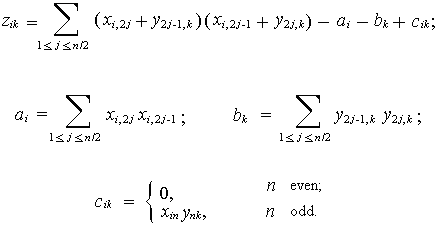

Z latinského reflexio pochází slovo reflexe - úvahy. V tomto případě
tedy úvahy o programování, inspirované prací na Albu algoritmů a technik.
ψNALEZENÍ K-TÉHO FIBONACCIHO ČÍSLA, K = 10000
ψZKRÁCENĚ VYHODNOCOVANÉ AND, OR V REXXU?
ψP+N TRIK WALTERA PACHLA
ψINSPIRACE MATEMATIKOU PSANOU DO PÍSKU
ψINTERPERACE KÓDU V REXXU TRVÁ DLOUHO?
ψOD PSEUDOKÓDU K PROGRAMU
ψZÁBAVNÁ TEORIE PRAVDĚPODOBNOSTI
Praxe s funkcemi Wendy Krieger
/* 10000th term of Fibonacci sequence
33644764876431783266621612005107543310302148460680063906564769974680081442166662
36815559551363373402558206533268083615937373479048386526826304089246305643188735
45443695598274916066020998841839338646527313000888302692356736131351175792974378
54413752130520504347701602264758318906527890855154366159582987279682987510631200
57542878345321551510387081829896979161312785626503319548714021428753269818796204
69360978799003509623022910263681314931952756302278376284415403605844025721143349
61180023091208287046088923962328835461505776583271252546093591128203925285393434
62090424524892940390170623388899108584106518317336043747073790855263176432573399
37128719375877468974799263058370657428301616374089691784263786242128352581128205
16370298089332099905707920064367426202389783111470054074998459250360633560933883
83192338678305613643535189213327973290813373264265263398976392272340788292817795
35805709936910491754708089318410561463223382174656373212482263830921032977016480
54726243842374862411453093812206564914032751086643394517512161526545361333111314
04243685480510676584349352383695965342807176877532834823434555736671973139274627
36291082106792807847180353291311767789246590899386354593278945237776744061922403
37638674004021330343297496902028328145933418826817683893072003634795623117103101
29195316979460763273758925353077255237594378843450406771555577905645044301664011
94625809722167297586150269684431469520346149322911059706762432685159928347098912
84706740862008587135016260312071903172086094081298321581077282076353186624611278
24553720853236530577595643007251774431505153960090516860322034916322264088524885
24331580515348496224348482993809050704834824493274537326245677558790891871908036
62058009594743150052402532709746995318770724376825907419939632265984147498193609
28522394503970716544315642132815768890805878318340491743455627052022356484649519
61124602683139709750693826487066132645076650746115126775227486215986425307112984
41182622661057163515069260029861704945425047491378115154139941550671256271197133
25276363193960690289565028826860836224108205056243070179497617112123306607331005
9947366875
*/
call TIME("R")
K = 10000 /* Kth term Fibonacci sequence, for K = 10000 */
/* number of digits in the 10000th Fibonacci number using Binet’s Formula: */
C = CEILING(K * LN((1 + SQRT5())/2)/LN10() - (LN(5)/2)/LN10())
numeric digits C
p = 10 ** C
WF10000 = FIBONMOD(K, P)
say TIME("R") "sec"
/* my PC with Intel Pentium Gold 5400, 16GB RAM displays 0.033 sec - 0.040 sec */
V = ""
do i = 2
S = SOURCELINE(i)
if S = "*/" then leave
V = V || SOURCELINE(i)
end
if WF10000 == V then say "OK!"
exit
13. září jsem publikoval v comp.lang.rexx první verzi následujícího článku:
Walter Pachl z Vídně objevil chybu v implementaci algoritmu HEAPSORT v Albu algoritmů a technik:
HEAPSORT: procedure expose A.
parse arg N
do I = N % 2 to 1 by -1
call SIFT I, N
end
do I = N to 2 by -1
W = A.1; A.1 = A.I; A.I = W
call SIFT 1, I - 1
end
return
SIFT: procedure expose A.
parse arg L, R
I = L; W = A.I; J = 2 * I
Jp1 = J + 1
if J < R & A.J < A.Jp1 then J = Jp1
do while J <= R & W < A.J
A.I = A.J; I = J; J = 2 * I
Jp1 = J + 1
if J < R & A.J < A.Jp1 then J = Jp1
end
A.I = W
return
SIFT. Za běhu dojde k výjimečnému stavu NOVALUE
použití neinicializované proměnné.
Uvažme případ vyhodnocení výrazu J<R & A.J<A.Jp1 pro
R = N a J = N. Proměnná A.Jp1, kde Jp1 = N + 1, bude pro
vstupní pole A.1,...,A.N neinicializovaná.
Nahlédl jsem znovu do knihy
Niklause Wirtha Algorithms and data structure, Prentice Hall, 1986. Ale nenašel jsem žádný podstatný
rozdíl v kódu - příčina chyby je totiž ve způsobu vyhodnocování logických operací AND a OR. V Rexxu pro
A & B, A |
B se vždy vyhodnotí oba operandy. V dalším budu takovou operaci označovat jako normální
logické
AND nebo OR. V Module však, je-li v případě A | B první operand pravdivý, je výsledek celé operace prohlášen za pravdivý. Tuto operaci budu v dalším
označovat jako zkráceně vyhodnocované AND nebo OR. Používá se i termín podmíněné AND nebo OR.
České termíny jsou ekvivalentní v angličtině běžně užívaným "short-circuiting logical operations" a
"conditional logical operations".
2.1: V souladu s ANSI X3J18-199X 7.4.8 je výraz
lhs & rhs, kde "&" je operátorem normální
logické operace AND, vyhodnocen takto:
if lhs \== '0' then
if lhs \== '1' then call #Syntax_error
if rhs \== '0' then
if rhs \== '1' then call #Syntax_error
Value='0'
if lhs == '1' then
if rhs == '1' then Value='1'
lhs | rhs ("|" je
operátor normální logické operace OR, je vyhodnocen takto:
evaluated
if lhs \== '0' then
if lhs \== '1' then call #Syntax_error
if rhs \== '0' then
if rhs \== '1' then call #Syntax_error
Value='1'
if lhs == '0' then
if rhs == '0' then Value='0'
&*" and "|*". Hvězdička je tu použita ve
významu: "nula nebo jeden operand bude ještě vyhodnocen".
lhs &* rhs je vyhodnocen
if lhs \== '0' then
if lhs \== '1' then call #Syntax_error
Value=lhs
if Value then do
if rhs \== '0' then
if rhs \== '1' then call #Syntax_error
Value=rhs
end
lhs |* rhs je vyhodnocen
if lhs \== '0' then
if lhs \== '1' then call #Syntax_error
Value=lhs
if \lhs then do
if rhs \== '0' then
if rhs \== '1' then call #Syntax_error
Value=rhs
end
Nechť {S} je (dlouhá) sekvence příkazů, pak ekvivalentní kód
ke kódu s operátory
"&*" and "|*" je (příkazy jsou psány vždy na
jediném řádku):
3.1: if A &* B then {S} (is equivalent to)
if A then if B then {S}
3.2: do while A &* B; {S}; end (is equivalent to)
do while A; if B then {S}; end
3.3: if A |* B then {S} (is equivalent to)
3.3.1: do 1; if \A then if \B then leave; {S}; end
or 3.3.2: do 1; if \A then if \B then iterate; {S}; end
or 3.3.3: if A then {S}; else if B then {S}
or 3.3.4: if A then call SUB; else if B then call SUB
where the SUB subroutine is
SUB: {S}; return
3.4: do while A |* B; {S}; end (is equivalent to)
do forever; if \A then if \B then leave; {S}; end
KRITICKÉ POZNÁMKY
3.1 a 3.2 jsou srozumitelné. Pro opravu HEAPSORT jsem použil 3.1 řešení.
Možná je čitelné i 3.4. Skutečným problémem je případ 3.3, protože 3.3.1 a 3.3.2, které vlastně převádí
3.3 na jakž takž čitelné 3.4, jsou téměř nepochopitelné. 3.3.3 by mohlo být zdrojem chyb, pokud bychom
dělali v {S} častější změny. A 3.3.4? – jedna procedura (zbytečně) navíc, hm, to
není příliš elegantní ...
4.1: S operátory "&*", "|*" je snadné překládat z Moduly.
V případě HEAPSORT
může být výsledek efektivnější, protože rychlejší, kód, díky vynechání vyhodnocování
A.J < A.Jp1 when J >= R.
...
SIFT: procedure expose A.
...
if J < R &* A.J < A.Jp1 then J = Jp1
do while J <= R &* W < A.J
...
if J < R &* A.J < A.Jp1 then J = Jp1
end
...
- Usnadnění překladu zkráceně vyhodnocovaných operací AND a OR z jazyků Ada,
C, C++,
GNU Pascal, Java, JavaScript, Lisp, Modula, Perl, VAX Pascal, VB.Net
do Rexxu a ovšem i naopak.
- Efektivnější kód.
4.2: Nyní můžeme vyjádřit zkráceně vyhodnocované operace explicitně a
jasně bez potřeby „opisů“ z kapitoly
třetí. Typické příklady:
4.2.1 if N <> 0 &* M / N > 0 then ...
4.2.2 if (I = 0) |* (J = 1 / I) then ...
4.2.3
JeOsobaVhodnaProTutoPraci: procedure
parse arg Person
if Vek(Osoba) > 18 &* IQTEST() > 138
then do; ...; return 1; end
else do; ...; return 0; end
IQTEST funkce je počítačem řízený, dlouhodobý, interaktivně probíhající test uživatele
JeOsobaVhodnaProTutoPraci: procedure
parse arg Person
if RESULT_IQTEST(Person) >> 138 |* IQTEST() > 138
then do; ...; return 1; end
else do; ...; return 0; end
RESULT_IQTEST unkce vrací "" nebo číslo,
číslo je výsledek posledního IQ testu.
5.0: Samozřejmě obrovský počet perfektně chodících programů s
"&" a "|" v celém světě.
5.1: Vyhodnocení druhého operandu může být výhodné v procesu ladění. Tedy pro odhalení chyby, která se neprojeví, není-li druhý operand vyhodnocován.
5.2: Jsou situace, kdy musí být vyhodnoceny oba operandy. To je
případ, kdy vyhodnocením druhého
operandu dojde ke změnám v hodnotách proměnných, v nějakém nastavení a
pododně. V tomto případě mluvíme
o tzv. postranním efektu (side effect). Podívejte se na následující
ukázku. Je tu uveden
fragment programu, který zkopíruje celý zbytek souboru Infile
za větou, která
má zadanou hodnotu String, do souboru Outfile.
Takový program by mohl být v praxi užitečný. S operandem "|*"
by to byl jen
obyčejný, nikdy nekončící cyklus
...
do until LINES(Infile) = 0 | LINEIN(Infile) = String
end
do while LINES(Infile) <> 0
call LINEOUT Outfile, LINEIN(Infile)
end
...
Našel jsem v literatuře o programovacích jazycích 4 přístupy k zařazení logických operací AND and OR do
jazyka.
6.1 - jen normální logické operace AND, OR, oba operandy se vyhodnocují (Rexx, Pascal, Visual Basic,
WEbScript)
6.2 - jen zkráceně vyhodnocované operace AND, OR (JavaScript, C, C++,
Lisp, Modula, Perl)
6.3 - zda logické operace budou chápány jako normální nebo zkráceně vyhodnocované určuje direktiva
kompilátoru (GNU Pascal).
6.4 - oužívají se i normální i zkráceně vyhodnocované operace AND, OR (Ada, VAX Pascal, Java, MATVEC,
Octave, VB.Net)
Doufám, že z kapitoly 4 a 5 je zřejmé, že přístup 6.4 by mohl být docela vhodný pro současné jazyky
s dlouhou tradicí, jakým je třeba Rexx.
7.1 Díky Walteru Pachlovi za motivaci k úvahám.
7.2 Sbírka článků "Comparing and Assessing Programming
Languages Ada, C and Pascal" (editoři A.R.Feuer, N.Gehani,
Prentice-Hall, 1984) zahrnuje příklad 4.2.1, řešení 3.1, upozornění typu
"J<R & A.J<A.Jp1"- (moje chyba ve staré verzi
HEAPSORT) to vše v rámci kritiky absence zkráceně
vyhodnocovaných operací
v jazyce Pascal.
7.3 Martin Lafaix: "Proposals for NetRexx [2000-07-04]"; chapter 5
Short-circuit logical operators - je stručným dooporučením pro zavedení zkráceně vyhodnocovaných operací s
operátory "&&&" a "|||" do jazyka NetRexx. Zahrnuje řešení 3.3.3.
Mimochodem, proč používám "&*" a "|*" místo "&&&" a
"|||"? Protože co je malé, je hezké.
7.4 Zajímavý je pohled z druhé strany od Toma Christiansena (je to argument proti normální
logické operaci OR v Perlu, kde zkráceně vyhodnocená operace existuje).
7.5 Následující tabulka shrnuje symboly logických operátorů používaných v některých
vybraných programovacích jazycích:
operation MATVEC Java VB.Net Ada
normal AND .&& & And and
normal OR .|| | Or or
short circuit AND && && AndAlso and then
short circuit OR || || OrElse or else
if clause in the if instruction
[NRL 80] and the when clause in the select instruction [NRL 108]
both have the same form and serve the same purpose, which is to test a value
either for being 1 or (for a when clause in a select case
construct) being equal to the case expression.
if and when clauses multiple expressions may now be
specified, separated by commas. These are evaluated in turn from left to right,
and if the result of any evaluation is 1 (or equals the case expression)
then the test has succeeded and the instruction following the associated
then clause is executed.
-- assume 'name' is a string
if name=null, name='' then say 'Empty'
name does not refer to an object it will compare equal to
null and the say instruction will be executed without evaluating the
second expression in the if clause.
Walter Pachl mi napsal: Před léty jsem v případě tvého
algoritmu (SIN) použil následující trik: abych získal výsledek
s přesností na P
destinných míst, vypočetl jsem ho nejprve na P + 2 desetinných
míst a pak zaokrouhlil.
Neprováděl jsem žádnou anylýzu chyb - hodnota P+2 byla vybrána
spíše heuristicky.
Následující program, jehož
autorem je Walter Pachl, dokazuje, že tato technika je užitečná i v případě mé funkce
SIN a samozřejmě i dalších funkcí z alba
(COS, LN, SQRT, etc.)
do P = 30 to 35
call Test P
end
exit
TEST: procedure
parse arg P
numeric digits P
say 'Yours ' SIN(0.6, P)
say 'should be ' (SIN(0.6, P + 2) + 0)
say ' '
return
SIN (COS, LN, SQRT, ...)
příkazy: numeric digits P; say SIN(X, P + N) + 0
dají výsledek s přesností P platných číslic pro "dostatečně"
velké N,
kde 0 <= N.
SIN a P = 9:
X = 0.6 pak N musí být 2
X = 355 pak N musí být dokonce
7, protože:
SIN(355, 9) + 0 = -0.000029987
SIN(355,10) + 0 = -0.0000301545
SIN(355,11) + 0 = -0.0000301432200
SIN(355,12) + 0 = -0.0000301443310
SIN(355,13) + 0 = -0.0000301443963
SIN(355,14) + 0 = -0.0000301443526
SIN(355,15) + 0 = -0.0000301443532
SIN(355,16) + 0 = -0.0000301443534
...
SIN(355,99) + 0 = -0.0000301443534
W. Kavan uvádí ve svém eseji Matematika psaná do písku následující
příklad:
729**33.5 = 729**(67/2) = (243*3)**(67/2) =
= (3*3*3*3*3*3)**(67/2) = 3**(3*67) = 3**201
Ale ... kapesní kalkulačka Hewlett-Packard, která počítá s přesností na 10 platných číslic dává výsledky
two results, 729**33.5 = 7.6841966E95
a
3**201 = 7.968419664E95
REPOWER(729,33.5,10) ve verzi s řádkem:
if P = "" then P = 9; numeric digits P
však vypočte výsledek 7.96841935E+95. W. Kahan píše:
... v tomto případě musíme při výpočtu použít více než 13 platných
číslic.
Proto jsem změnil
kód funkce REPOWER na:
if P = "" then P = 9; numeric digits P
Po této úpravě program
do P = 3 to 10
numeric digits P
say P REPOWER(729, 33.5, P) + 0
end
P výsledek
3 7.97E+95
4 7.968E+95
5 7.9684E+95
6 7.96842E+95
7 7.968420E+95
8 7.9684197E+95
9 7.96841967E+95
10 7.968419666E+95
Přečetl jsem si algoritmus J. M. Borweina a P. B. Borweina na výpočet čísla Pi;
napsal a odladil jsem program PI
(trvalo to asi 20 minut); spustil jsem jej a vypočetl číslo Pi s přesností na tisíc platných míst
(tak tohle trvalo asi 90 sekund). "Programy, napsané v jazyce Rexx, jsou obvykle
interpretovány a proto může jejich provedení trvat dlouho."
Hm ... říkáme rychlost výpočtu,
ale nejde nám spíš o rychlost s jakou dosáhneme řešení?
Není to jednoduchá úloha překládat do jazyka Rexx programy napsané
původně v
různých pseudokódech nebo programovacích jazycích jako jsou Ada, ALGOL,
BASIC, C, FORTRAN, Modula, Pascal,
PL/1.
Překládal jsem popis algoritmu pro
Winogradovo efektivní násobení matic
(Kapitola 4.6.4, The Art of Computer Programming, Volume 2). V originále to vypadá takhle:

Odd = N // 2
do K = 1 to R; compute bk; end
do I = 1 to M
compute A = ai
do K = 1 to R
zik = 0
if Odd then zik = ain * bnk
do J = 1 to N % 2
compute (xi,2j + y2j-1,k) * (xi,2j-1 + y2j,k)
end
zik = zik - A - bk
end K
end I
FORMAT(N/2,,0)*M*R + (N%2)*(M+R).
Dává vestavěná funkce RANDOM skutečně "dobrá náhodná" čísla?
Můžeme
se o tom přesvědčit speciálními testy jako je chi-kvadrát test nebo test
Kolmogorova a Smirnova. Ale
je tu mnohem zábavnější cesta. Tak například věta Ernesta Cesara (1881)
říká: Jestliže
A a B jsou náhodně vybraná celá čísla,
pak pravděpodobnost, že nsd(A,B)=1 je 6/PI()**2.
Poznámka 1.: 6/PI()**2=0.607927099...
Poznámka 2.: Pro podrobnější popis se podívejte na stránky NSD
a PI
Následující program můžeme použít jako test generátoru pseudonáhodných čísel.
parse arg N
P = 0
do i = 1 to N
A = RANDOM(0, 100000); B = RANDOM(0, 100000)
if NSD(A, B) = 1 then P = P + 1
end
say P / N
exit
...
N=10, 100, 1000, 10000, 100000 shrnuje tato tabulka.
N blíží se k 0.607927099
10**1 0.6
10**2 0.62
10**3 0.615
10**4 0.6128
10**5 0.60887
10**6 0.607846
MODIFIND je roven
S(N, K) = 0.5((N + 1)HN
- (N - K)HN - K + 1
- (K - 1)HK)
HN = 1 + 1/2 + ... + 1/N
N = 1001; K = 500 a vstupní pole vytvořené příkazy
do J = 1 to N; A.J = RANDOM(1, 100000); end
vypočteme průměrný počet výměn po NR bězích programu.
NR blíží se k 353.311
10**1 370.2
10**2 354.23
10**3 352.171
10**4 353.234
aktualizováno 16. srpna 2021 Copyright © 1998-2021 Vladimír Zábrodský, Blansko
zabrodsky(DOT)v(AT)seznam(DOT)cz